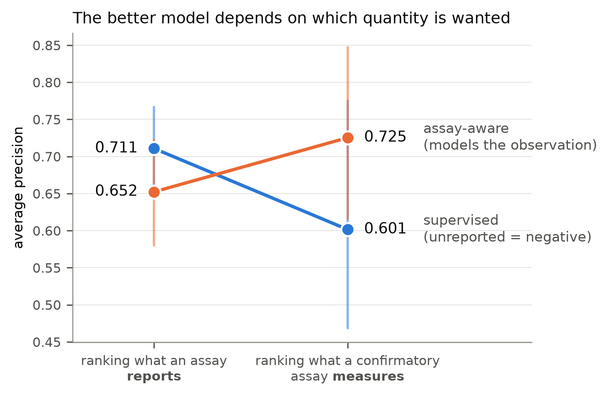
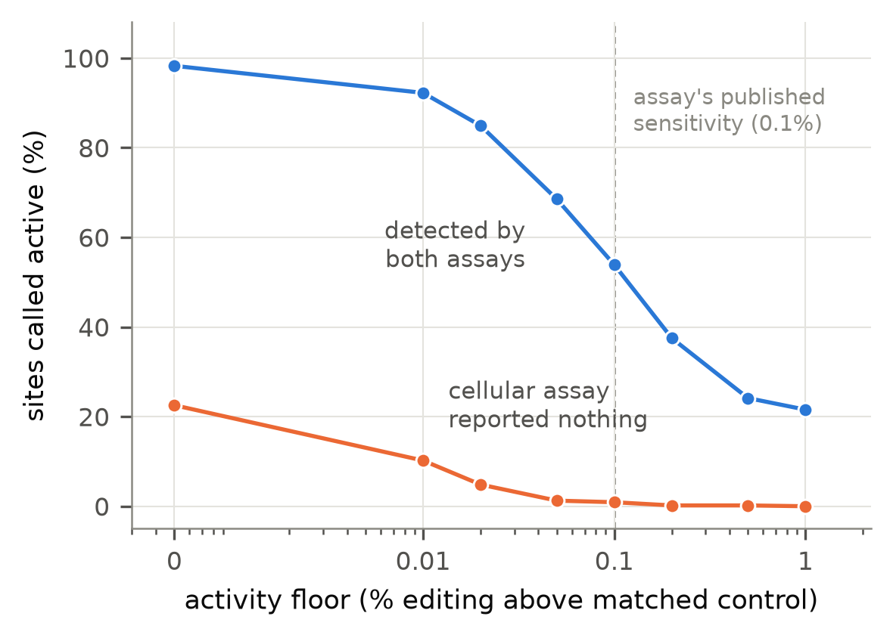
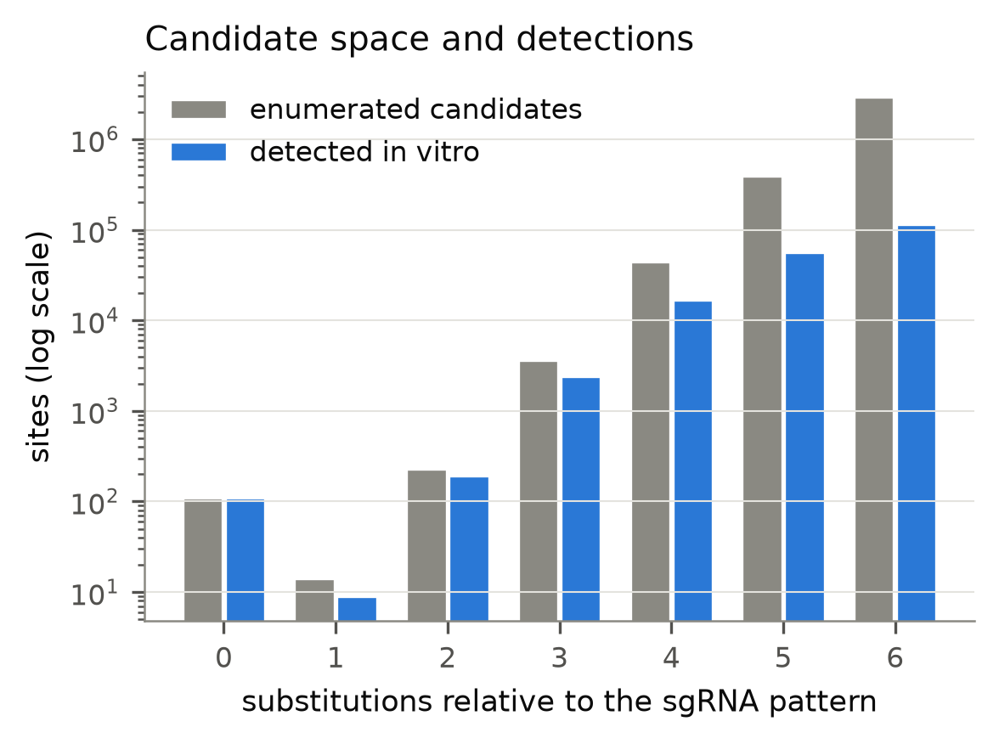

CRISPR–Cas9 · off-target prediction · open benchmark
Assay-aware learning from incomplete labels for cross-study CRISPR–Cas9 off-target prediction.
“No cut reported” is not “no cut occurred.”
Off-target predictors learn from labels produced by detection assays that disagree with each other. Most pipelines resolve that disagreement by declaring every unreported candidate a biological negative — turning a statement about what was observed into one about what happened. This project asks what can actually be estimated from such data, and answers with measurements rather than assumptions.
Ranking what an assay reports and ranking what a nuclease does are different targets. The ordering of methods reverses between them — and the published record contains far more of the first than the second.

| Question | Answer |
|---|---|
| Is “unreported” a safe negative? | At the assay’s own 0.1% sensitivity, yes — only 0.9% of sites a cellular assay missed show real editing. Below that floor, up to 22.5% do. |
| Does modelling the observation process help? | Only for the right target. It costs 0.058 average precision at predicting reports and gains 0.124 at predicting measured activity. |
| Can activity and detection be separated? | Only under a declared constraint. Configurations fitting the reports equally well disagree more and more about activity as the detection branch is freed — 36% → 44% → 59% spread across initialisations. |
| Does it beat what practitioners already do? | Not demonstrably. Ranking by in-vitro read depth reaches 0.660 against the model’s 0.725, and the gap is not significant on six guide RNAs (p = 0.079). |
How much cellular activity hides among sites a cellular assay failed to report? It depends entirely on how much activity you insist on seeing — and it moves 25-fold across the plausible range. Quoting either end without the other reports a choice as a result.

Every hg38 site within six substitutions of each guide RNA is enumerated exactly on the GPU — 6,765,936 candidates in 134 seconds, containing 100.0000% of the released detections. Detection is strongly non-uniform across that space, which is precisely what the observation branch has to represent.

Found while building the benchmark, and documented so others do not repeat them.
FALSE both for a rejected off-target and for a failed PCR. Only
592 of 4,340 such rows carry a measurement that tells them apart.Everything is public: the harmonised benchmark with its generated provenance log, the enumerated candidate space, the frozen split seed, the pre-registered analysis plan with its amendments, and per-guide predictions. Fourteen invariants that the paper’s claims rest on are asserted in code.